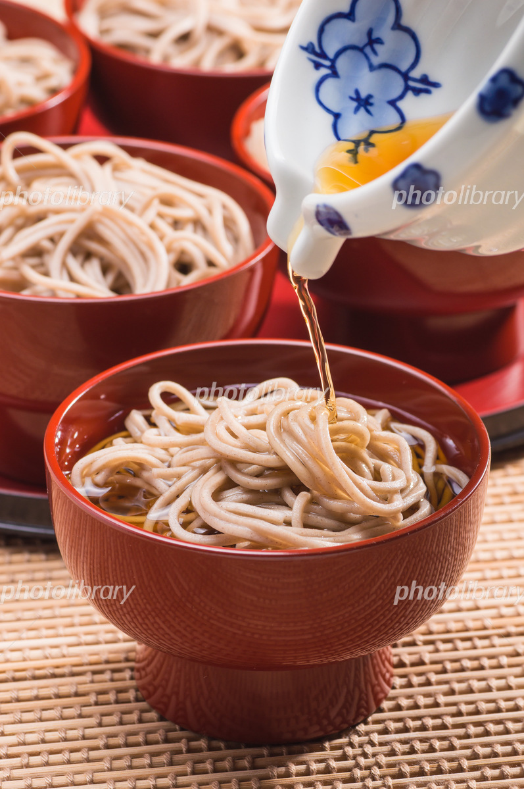
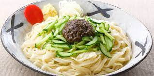
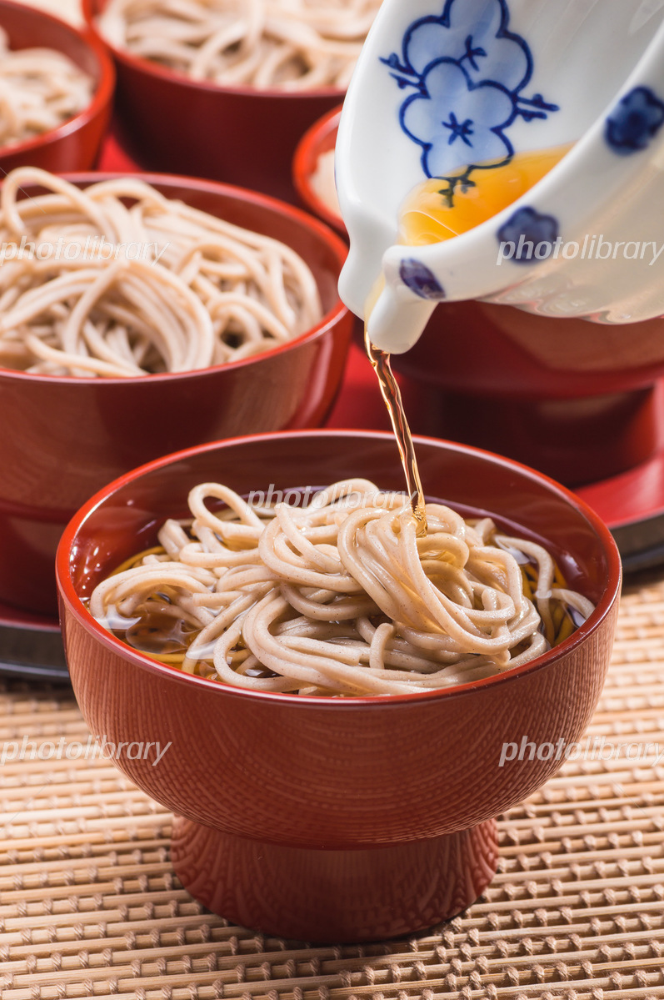
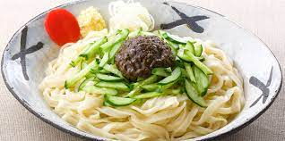
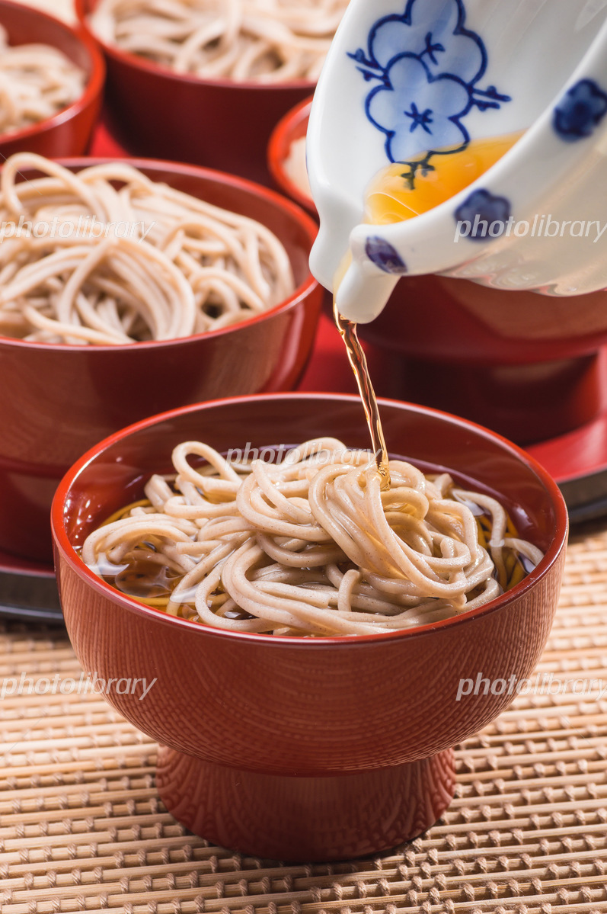
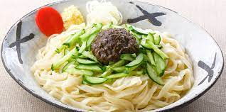
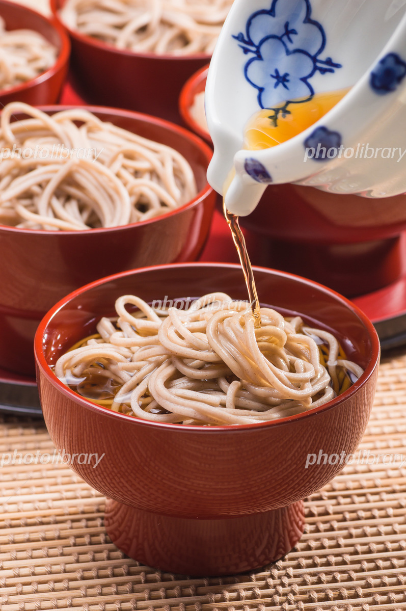
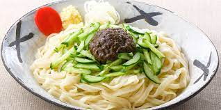
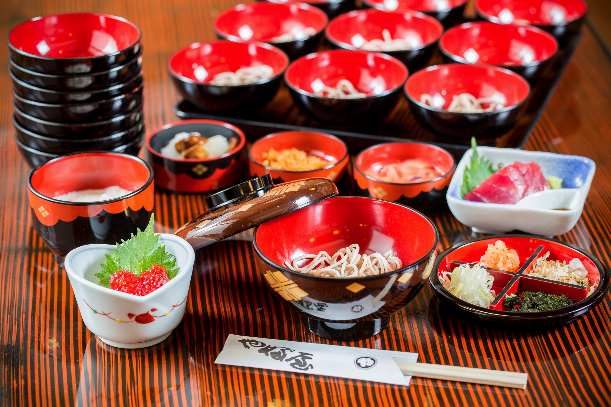
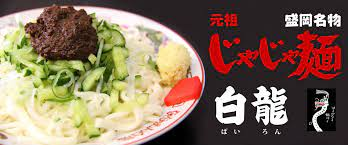

盛岡冷麺：盛岡冷麺は発祥の地は朝鮮半島にあるとされていて、朝鮮半島の冷麺は
もとの麺はそば粉で作られて黒っぽい麺が特徴でしたが平壌出身の料理人が日本に
わたってきたときに故郷を思い盛岡で作ったのが始まりです。しかしそのままでは
日本人の舌には合わないと考えられアレンジを重ね今の盛岡冷麺になったといわれています。
わんこそば：わんこそばの起源は、諸説ありますが花巻を起源とする説では江戸時代の南部家当主、
南部利直が江戸に向かう最中に花巻に立ち寄った際、お椀に持ったそばがあまりにもおいしかったため何度も
おかわりをされたという説があります。
じゃじゃ麺：中国の旧満州地域の郷土料理であった炸醤麺(ジャージャー麺)にアレンジを加えて出したところ
口コミで人気が広がり岩手県を代表する三大麺の一つになったとされます。
盛岡冷麺のおいしさ：コシのある麺とそれに絡まった牛骨や鶏ガラベースのスープです。 すっきりとした味わいが特徴です。キムチを追加することもでき辛味も相まっておいしいです。 わんこそばの魅力：お椀に追加されるそばを薬味をつけていただき食べ終わったらまた追加され、 満腹になってお椀のふたを閉めるまで続くというものです。無制限・食べ放題ですが、食べる側の ペースに合わせてゆっくりと食べるおもてなしの郷土料理です。 じゃじゃ麺のおいしさ：三回食べたらそのおいしさがわかるといわれていますが、みそに他の食材 が混ざった味わいは食べると忘れられずやみつきになるといわれています。
それぞれのおいしい店を紹介したいと思います。
盛岡冷麺：北上市に本部を置く「やまなか屋」がおすすめです。
 わんこそば：盛岡駅のフェザンにある「やぶ屋」がおいしいといわれています。
わんこそば：盛岡駅のフェザンにある「やぶ屋」がおいしいといわれています。

じゃじゃ麺：じゃじゃ麺の元祖「白龍（パイロン）」です。元祖ともあり、肉味噌が
とてもおいしいそうです。
